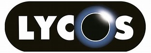
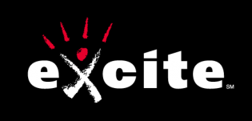
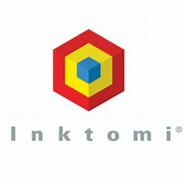
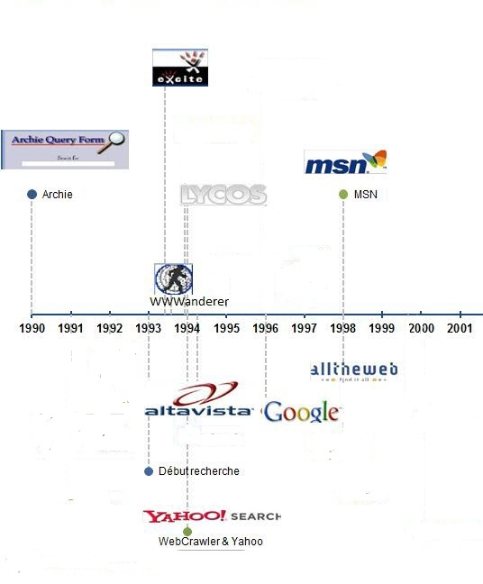
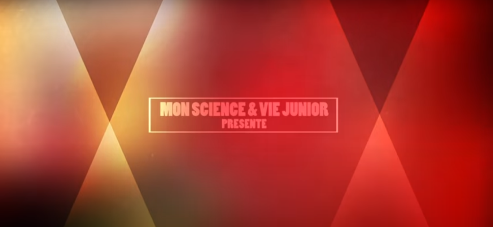

Présentation :
Un moteur de recherche, c'est un programme informatique disponible sur Internet dont le but est de donner les résultats à un mot-clé que l'utilisateur aura saisi. Le moteur de recherche affiche alors tous les résultats des sites Internet qu'il répertorie dans sa base de données.
Tous les moteurs de recherche descendent d'Archie, un logiciel conçu en 1990 pour rechercher des documents sur internet par Adam Emtage,étudiant à l'université McGill (Québec). Ce site va retracer l'histoire des premiers moteurs de recherches, jusqu'à l'arrivé du géant Google.
1993 - Wanderer est né, ainsi que les "spiders"
Le premier moteur de recherche digne de ce nom naît avec le web : il s'agit du Wanderer ("le vagabond"), un search bot mis au point par Matthew Gray. Une armée de "spiders" (logiciels chargés de parcourir le web) viennent envahir la toile.
1994 - L'annuaire Yahoo
Deux étudiants de l'université Stanford, Jerry Yang et David Filo, ont une idée qui va changer la face des réseaux : sélectionner et recenser humainement les meilleurs sites dans un annuaire internet. Yahoo est né, il devient en quelques mois le portail le plus utilisé par les internautes.
1995 - Lycos et Excite
 
- Les machines à chercher se perfectionnent. Lycos, qui doit son nom à une araignée particulièrement rapide, est mis en ligne en juin 1995 par l'université Carnegie Mellon (Pennsylvanie).
- Quelques semaines plus tard, le moteur Excite, mis au point par des étudiants de Stanford, se lance à son tour.
1996 - Altavista et Nomade
- Lancé en décembre 1995, Altavista est mis au point par le Français Louis Monnier pour les laboratoires Digital. Il est rapide, pertinent et exhaustif. Il propose de multiples fonctionnalités de recherche, notamment par langues.
- Jusqu'en juillet 1996,les seuls outils de recherche destinés aux francophones sont québécois. Gilles Ghesquière et Jean Postaire y remédient en créant Nomade.fr, le premier annuaire internet en version française. Il faudra attendre 1998 pour que France Telecom lance son propre moteur de recherche, Voila.fr.
1997 - Inktomi

Alors que tous les moteurs de recherche tentent de se transformer en portails grand public financés par la publicité, Inktomi se spécialise dans la fourniture de solutions de recherche internet aux entreprises.
1998 - Les Futurs Géants, Google et MSN
- L'université de Stanford produit deux nouveaux petits génies : concepteurs d'un moteur de recherche baptisé Google, Sergei Brin et Larry Page vont révolutionner le secteur. À la fois pertinent et exhaustif, cet engin de nouvelle génération classe les résultats de recherche en fonction de leur popularité auprès des internautes. Le bouche à oreille fait le reste.
- En parallèle, le nom de domaine MSN.com, très peu popularisé à cette date, devient un portail web fournissant chaque service de Microsoft. Le site MSN devient alors le concurrent d'autres sites tels que « Yahoo! ».
1999 - Fast
Inspirés par le succès de Google, des chercheurs de l'université d'Oslo créent Fast Technology avec pour inovation le moteur Alltheweb ; comme Inktomi, Fast se positionne sur la fourniture de technologies pour les entreprises. Un challenger est né.
2000 - Coup de boost pour Google
Élu " meilleur moteur de recherche de l'année 2000 " dans Searchenginewatch.com, Google est choisi par Yahoo comme moteur de recherche privilégié à la place d'Inktomi. Grâce à cette publicité, Google devient l'outil de recherche le plus utilisé par les internautes (en France également), et projette désormais d'entrer en Bourse.
2001 - Déroute des pionniers
Avec l'e-krach, c'est le début de la fin pour les moteurs de recherche des débuts, du moins pour ceux qui ont misé leur avenir sur une stratégie portail au détriment de la technologie : Excite dépose le bilan, Altavista tente la relance de la dernière chance...
Frise chronologique

Une anecdote concernant Excite et Google : 